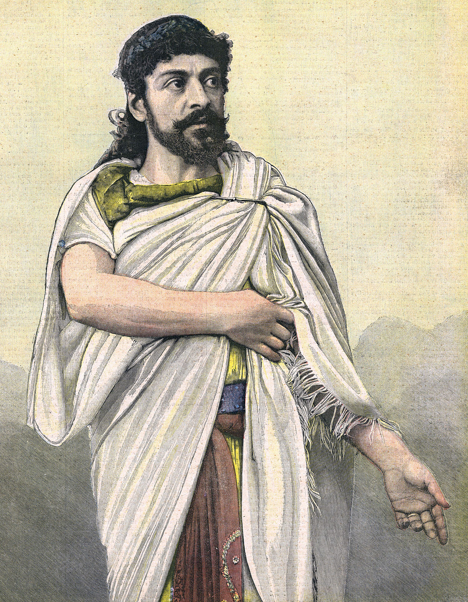
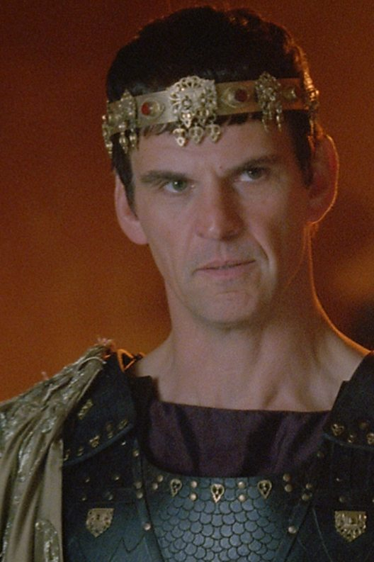
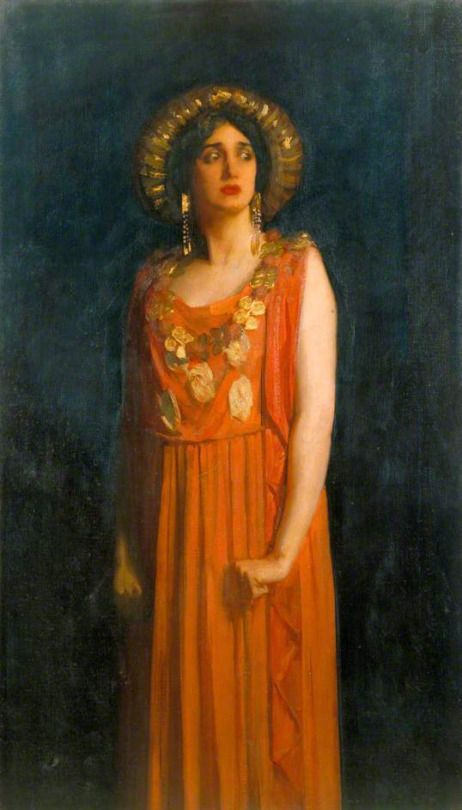
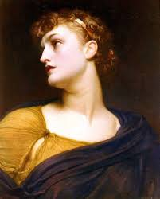
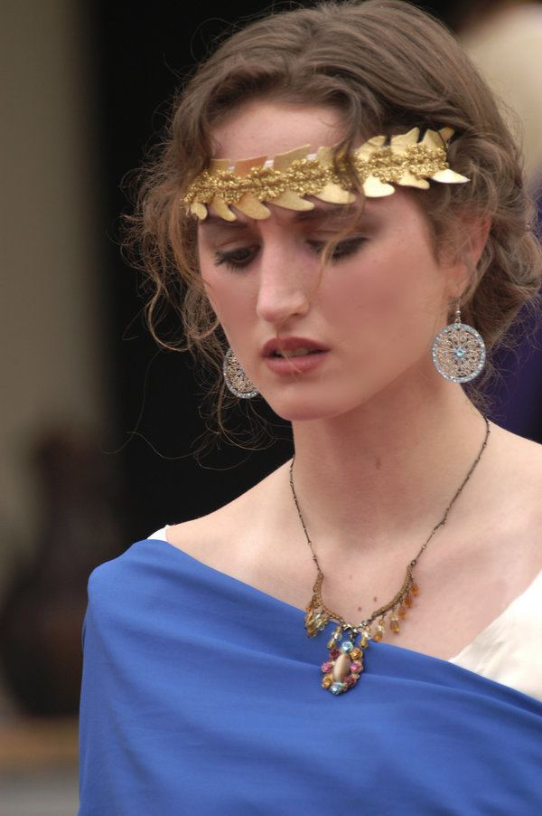
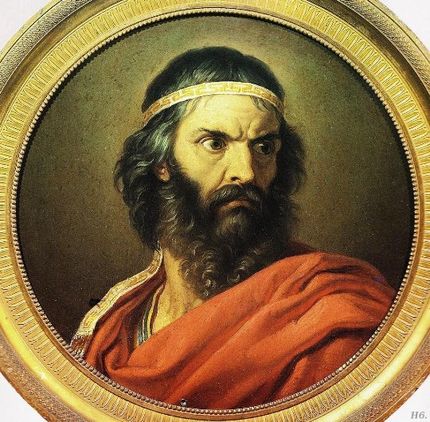
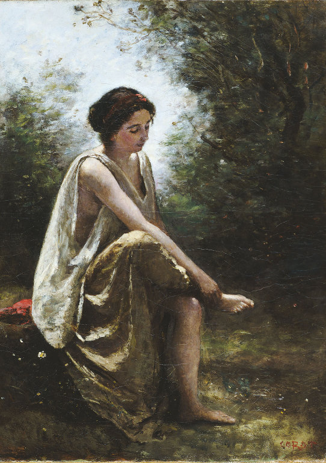
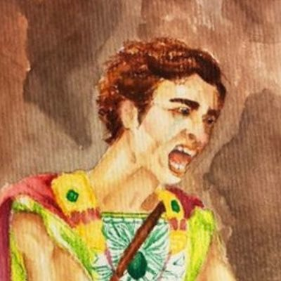
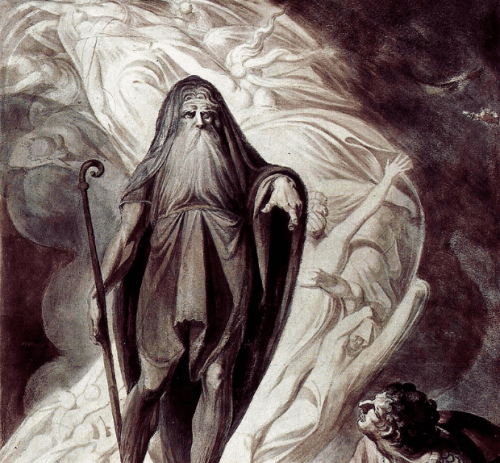
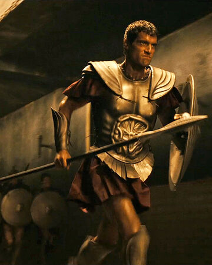

The protagonist of Oedipus the King and Oedipus at Colonus.On his way to Thebes, he killed his biological father, not knowing who he was, and proceeded to marry Jocasta, his biological mother.
কেলিনাসে ওডিপাস কিং ও অডিপাসের নায়ক। থিবেস যাওয়ার পথে তিনি তাঁর জৈবিক পিতাকে হত্যা করেছিলেন, তিনি কে ছিলেন তা না জেনে। তিনি তাঁর জৈবিক মা জোকাস্টাকে বিয়ে করেছিলেন।
Biological Father Of Oedipus
ইডিপাসের জৈবিক পিতা।
Oedipus’s wife and mother, and Creon’s sister.she attempts to make peace between Oedipus and Creon, pleading with Oedipus not to banish Creon. She is comforting to her husband and calmly tries to urge him to reject Tiresias’s terrifying prophecies as false.
ওডিপাসের স্ত্রী এবং মা এবং ক্রিওনের বোন। তিনি ওডিপাস এবং ক্রিওনের মধ্যে শান্তি স্থাপনের চেষ্টা করেছিলেন, ক্রিওনকে নিষিদ্ধ না করার জন্য ওডিপাসের কাছে আবেদন করেছিলেন। তিনি তার স্বামীকে সান্ত্বনা দিচ্ছেন এবং শান্তভাবে তাকে তারেরিয়াসের ভয়াবহ ভবিষ্যদ্বাণীকে মিথ্যা হিসাবে প্রত্যাখ্যান করার জন্য অনুরোধ করার চেষ্টা করেছেন।
Child of Oedipus and Jocasta, and therefore both Oedipus’s daughter and his sister.
ওডিপাস এবং জোকাস্টার সন্তান এবং তাই ওডিপাসের মেয়ে এবং একইসাথে তার বোন।
Child of Oedipus and Jocasta, and therefore both Oedipus’s daughter and his sister.
ওডিপাস এবং জোকাস্টার সন্তান এবং তাই ওডিপাসের মেয়ে এবং একইসাথে তার বোন।
Son of Oedipus, and thus also his brother.
ইডিপাসের পুত্র, এবং এইভাবে তাঁর ভাই।
Oedipus’s brother-in-law and Jocasta's brother.
ওডিপাসের শ্যালক এবং জোকাস্টার ভাই।
Creon’s wife.
ক্রেওনের স্ত্রী।
Creon’s son, who appears only in Antigone. Haemon is engaged to marry Antigone.
ক্রেওনের পুত্র, তিনি কেবল অ্যান্টিগনে উপস্থিত হন। হেমন এর সাথে অ্যান্টিগোনের বিয়ে ঠিক হয়েছিলো।
He is a blind soothsayer in Thebes.He came to clear the myestry of king Laius's death.
তিনি থিবেসের একজন অন্ধ জ্যোতিষী। তিনি রাজা লাইউসের মৃত্যুর রহস্য পরিষ্কার করতে এসেছিলেন।
Chorus, in the theater, is a group of singers and dancers who take part in a drama and are accompanied by music. Like in Oedipus Rex, the chorus sings lyrical, poetic kinds of comments during the pauses in the dramatic plot.
প্রেক্ষাগৃহে কোরাস, এমন একাধিক গায়ক এবং নৃত্যশিল্পী যারা একটি নাটকে অংশ নেন এবং সঙ্গীতের সাথে থাকেন। ওডিপাস রেক্সের মতো নাটকীয় প্লটটিতে বিরতি দেওয়ার সময় গীতিনাট্য, কাব্যিক ধরণের মন্তব্য পরিবেশন করে।
The king of Athens in Oedipus at Colonus. A renowned and powerful warrior, Theseus takes pity on Oedipus and defends him against Creon.
কর্নাসের ওডিপাসে অ্যাথেন্সের রাজা। একজন প্রখ্যাত ও শক্তিশালী যোদ্ধা, থিসাস ওডিপাসের প্রতি করুণা দেখান এবং ক্রিওনের বিরুদ্ধে তাকে রক্ষা করেন।
দুর্ভিক্ষ/noun/ - departure, Famine